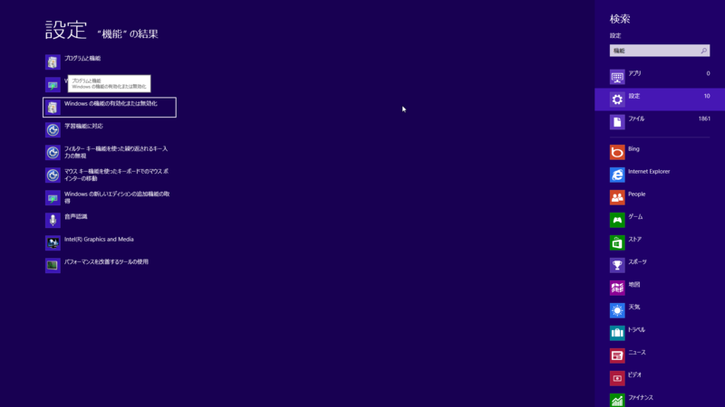
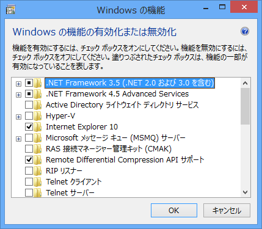
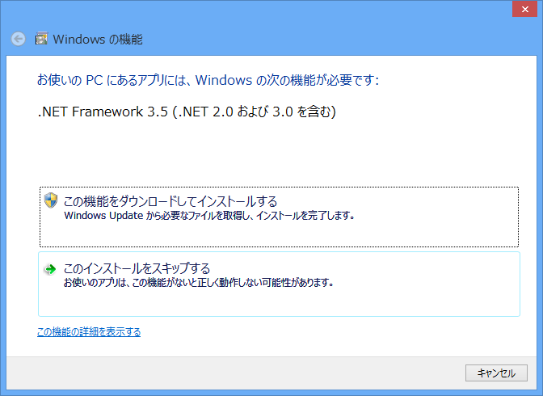
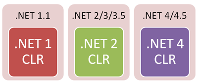
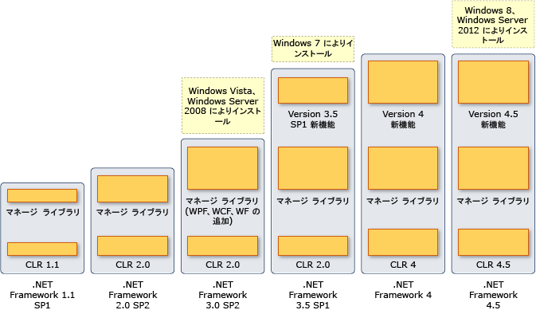

Windows 8 で .NET Framework 3.5 を有効にする方法
執筆日時：

［Windows の機能の有効化または無効化］を開いて……（キーボードだけでぺぺぺっとやるんだぜ？）

.NET Framework 3.5 を有効にするのが正しいやり方。.NET Framework 3.0 や .NET Framework 2.0 ベースのアプリも動くようになる。

でも、これが面倒で、なおかつ「Paint.NET」のファンならば、セットアップ後にさくっと「Paint.NET」をインストールしておくという手もある*1。インストール時に .NET Framework 3.5 が有効になるよ。
めんどくさくね？

via .NET Versioning and Multi-Targeting - .NET 4.5 is an in-place upgrade to .NET 4.0 - Scott Hanselman
なんでこんなことになっているのか…… CLR 1.0 / CLR 2.0 を標準では有効化しない、という方針によるもの？ ちなみに CLR 3.0 は存在せず、現在の最新版は .NET Framework 4/4.5 のベースとなっている CLR 4/4.5 。そろそろ CLR 2.0 はやめて、CLR 4.x を使ってなーということなのかも。
気持ちはわからんでもないけどめんどくさい。

via バージョンおよび依存関係
*1:「Paint.NET」に限らず、こういう気の利いたアプリケーションのインストールを先にやると手間が省けるということ